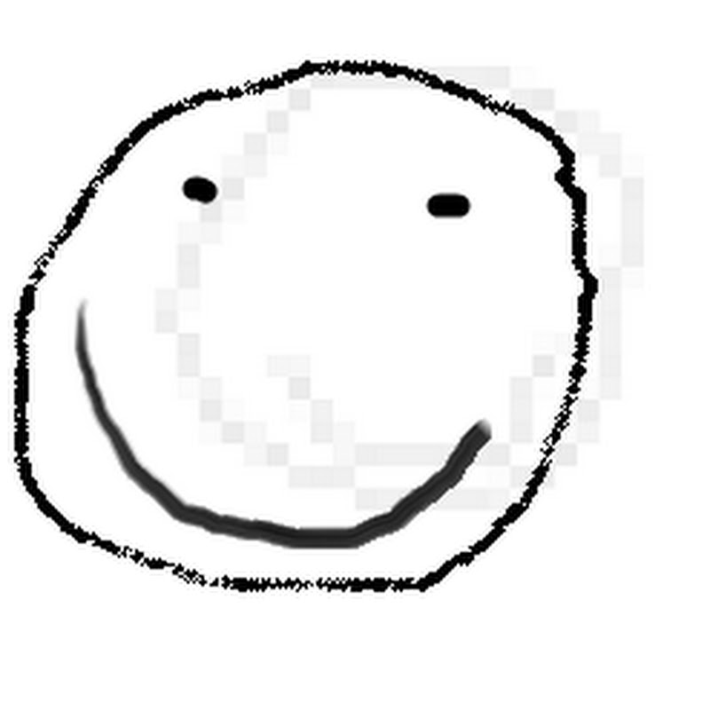

Me
Youtube
Twitter
Home
Sebbog
Welcome to my page! Feel free to look around. This page is more for me to talk about myself and promote myself, rather than being a traditional Wikipedia page.
Youtube
My YouTube channel can be found at
youtube.com/channel/UCwpH0BOw4G-XD_ZioODxySQ
Twitter
My Twitter account can be found at
twitter.com/@Sebbog1
About Me
My name is Sebbog and I enjoy programming and chatting on Discord. My birthday is on September 9th.